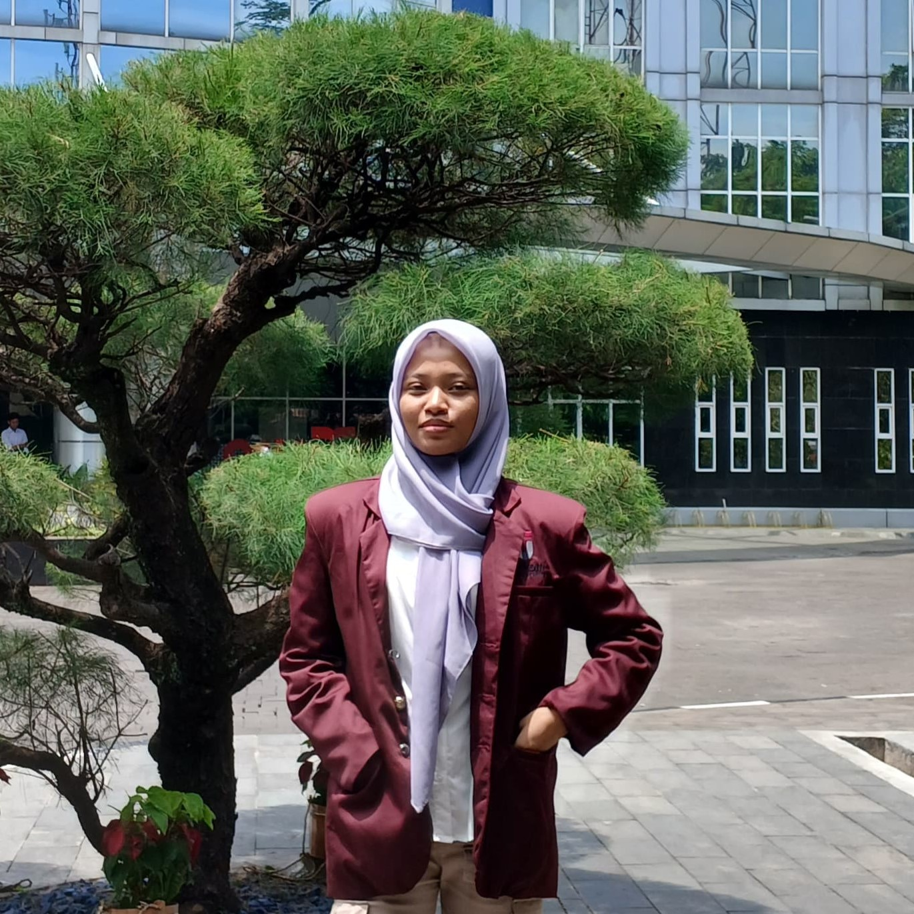
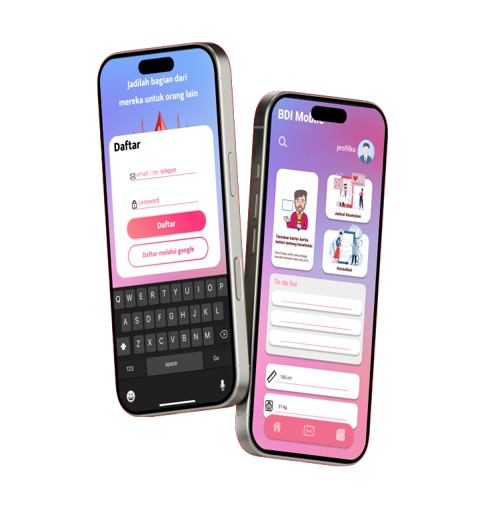
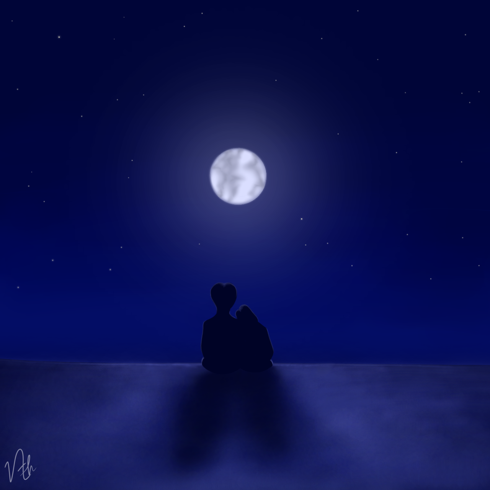

About me

Naila Zahwa
Halo, Nama saya Naila Zahwa, berusia 18 tahun, saat ini saya berkuliah dijurusan Informatika, saya memiliki minat dalam bidang teknologi informasi digital, namun saya juga memiliki kemampuan dalam bidang seni gambar. Kemampuan berbahasa inggris saya berada ditingkat dasar hingga menengah.
My Work



Karya UI/UX saya ketika di sekolah menengah, dalam Perkemahan Ilmiah Remaja (PIR), karya pertama yang dibuat dengan figma.

Self project dimana ini adalah digital art yang saya buat dan bagikan dimedia sosial.
Ini adalah karya saya yang lainnya. Saya mengembangkan kemampuan meanggambar saya melalui karya-karya ini.
Digital art saya yang lebih banyak.